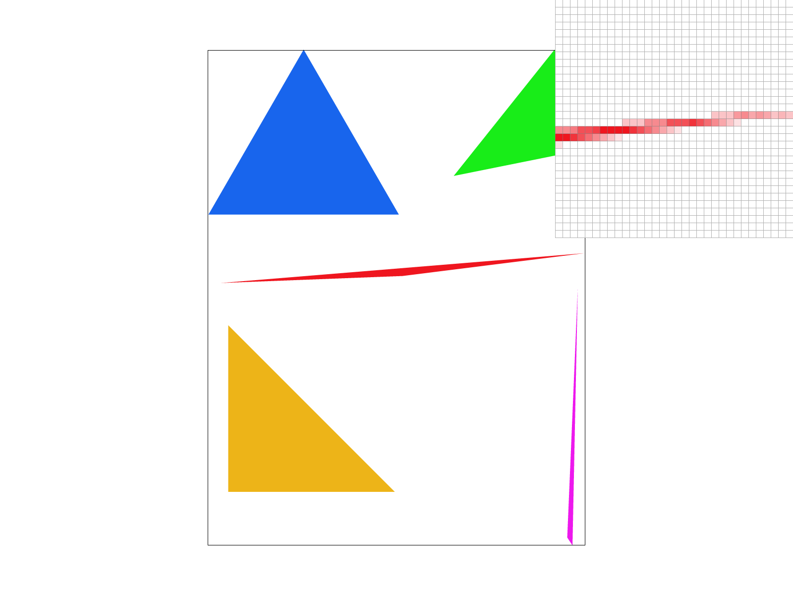
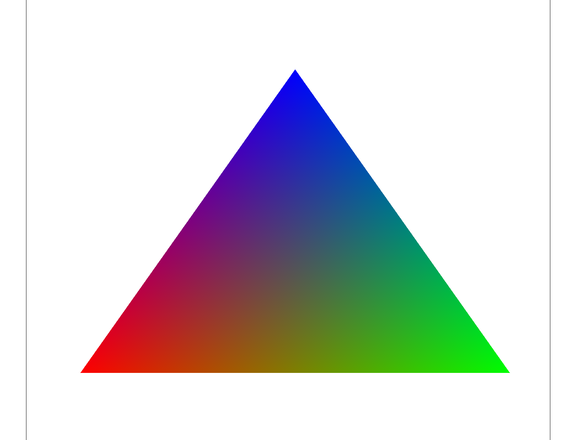

Part 1
First we check if the given points are in counterclockwise order using a determinant test. If they aren't, we swap the first two points to force CCW order. Then we loop from the minimum to maximum x and from the minimum to maximum y. For each of these points (+0.5 to x and y to get to the center of the pixel), we check if it's in the triangle using the point-in-triangle test. If all 3 line tests pass, we fill the pixel.
This algorithm checks every pixel in the bounding box of the triangle exactly once.

Part 2
We first change sample_buffer to be a flattened 3D array instead of a flattened 2D array (indexed into by z * width * height + y * width + x). This means sample_buffer's size is multiplied by sample_rate. When rasterizing the triangle we use this 3rd dimension to store sample_rate values per pixel corresponding to the sample_rate samples inside each pixel. In resolve_to_framebuffer we can then average all colors for a single pixel by averaging across z for the same x and y.
Supersampling is useful for antialiasing. We now store many more values when rasterizing the triangles and we have to downsample afterwards. Supersampling allows us to remove high frequencies and "blur" the triangles, which helps antialias the triangles.



With a very skinny triangle the frequency of change is very high, so whether we get color or not with a rate of 1 per pixel is pretty random. This leads to the gap we see in the first picture. As we remove high frequencies by averaging colors, the triangle blurs and the pieces of the triangle join together.
Part 3
Cubeman is waving.

Part 4
Barycentric coordinates are essentially weights on the 3 vertices of a triangle. When we look at any point inside the triangle we can express its position as a weighted sum of the 3 vertices, where being closer to a vertex increases the weight of the vertex. Because barycentric coordinates express how close a point is to each vertex, it helps with interpolating colors as we do in this image. As a point gets further from a vertex the color contribution from that vertex (and the barycentric value for that vertex) goes down and the contributions of the other vertices goes up.
